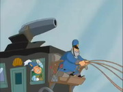
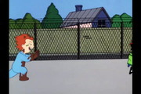

Adventures of Sonic the Hedgehog65 episodes
Adventures of Sonic the Hedgehog65 episodes

Animaniacs100 episodes · 5 seasons + movie Batman: The Animated Series109 episodes · 6 seasons
Batman: The Animated Series109 episodes · 6 seasons
 Beavis and Butt-Head211 episodes · 9 seasons
Beavis and Butt-Head211 episodes · 9 seasons
 Beetlejuice94 episodes · 4 seasons
Beetlejuice94 episodes · 4 seasons
 Biker Mice from Mars65 episodes · 3 seasons
Biker Mice from Mars65 episodes · 3 seasons
 Bobby's World81 episodes · 7 seasons
Bobby's World81 episodes · 7 seasons
 Camp Candy34 episodes · 3 seasons
Digimon: Digital Monsters104 episodes · 2 series
Camp Candy34 episodes · 3 seasons
Digimon: Digital Monsters104 episodes · 2 series
 Dragon Ball152 of 153 episodes · 9 seasons
Dragon Ball152 of 153 episodes · 9 seasons
 Dragon Ball Z291 episodes · 9 seasons
Dragon Ball Z291 episodes · 9 seasons
 Dragon Ball GT61 of 64 episodes · 4 seasons
Dragon Ball GT61 of 64 episodes · 4 seasons
 Dragon Ball Super100 of 131 episodes · 5 seasons
Dragon Ball Super100 of 131 episodes · 5 seasons
 Muppet Babies107 episodes · 8 seasons
Muppet Babies107 episodes · 8 seasons

Recess131 entries · 6 seasons + movies The Ren & Stimpy Show41 episodes · 4 seasons
The Ren & Stimpy Show41 episodes · 4 seasons
 Spider-Man: The Animated Series65 episodes · 5 seasons
Spider-Man: The Animated Series65 episodes · 5 seasons
 Teenage Mutant Ninja Turtles: The Next Mutation26 episodes
Teenage Mutant Ninja Turtles: The Next Mutation26 episodes
 The Tick36 episodes · 3 seasons
Tiny Toon Adventures101 episodes · 3 seasons + movies
The Tick36 episodes · 3 seasons
Tiny Toon Adventures101 episodes · 3 seasons + movies
 X-Men: The Animated Series76 episodes · 5 seasons
X-Men: The Animated Series76 episodes · 5 seasons